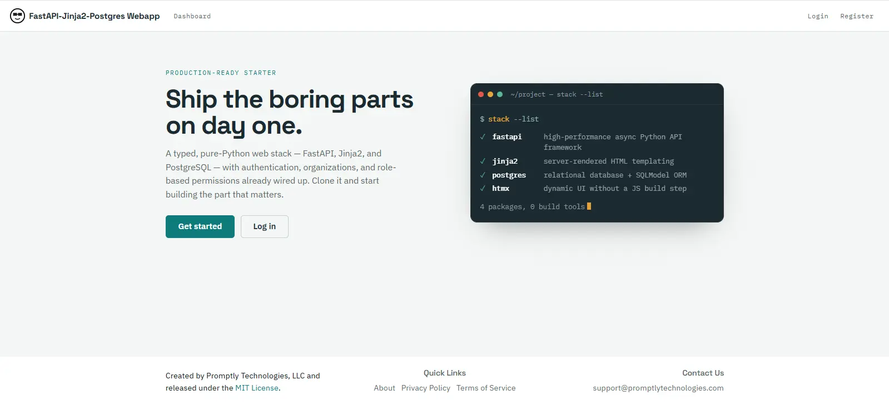

FastAPI, Jinja2, PostgreSQL Webapp Template

Quickstart
This quickstart guide provides a high-level overview. See the full documentation for comprehensive information on features, installation, architecture, conventions, code style, and customization, deployment to cloud platforms, and contributing.
Features
This template combines three of the most lightweight and performant open-source web development frameworks into a customizable webapp template with:
- Pure Python backend
- Minimal-Javascript frontend
- Powerful, easy-to-manage database
The template also includes full-featured secure auth with:
- Token-based authentication
- Password recovery flow
- Role-based access control system
Design Philosophy
The design philosophy of the template is to prefer low-level, best-in-class open-source frameworks that offer flexibility, scalability, and performance without vendor-lock-in. You’ll find the template amazingly easy not only to understand and customize, but also to deploy to any major cloud hosting platform.
Tech Stack
Core frameworks:
- FastAPI: scalable, high-performance, type-annotated Python web backend framework
- PostgreSQL: the world’s most advanced open-source database engine
- Jinja2: frontend HTML templating engine
- SQLModel: easy-to-use Python ORM
Additional technologies:
- uv: Python dependency manager
- Pytest: testing framework
- Docker: development containerization
- Github Actions: CI/CD pipeline
- Great Docs: documentation website generator
- ty: static type checker for Python
- htmx: dynamic HTML interactions with no JS build step (the frontend is styled with a custom, dependency-free stylesheet)
- Resend: zero- or low-cost email service used for password recovery
Installation
For comprehensive installation instructions, see the installation page.
uv
MacOS and Linux:
wget -qO- https://astral.sh/uv/install.sh | shWindows:
powershell -ExecutionPolicy ByPass -c "irm https://astral.sh/uv/install.ps1 | iex"See the uv installation docs for more information.
Python
Install Python 3.12 or higher from either the official downloads page or using uv:
uv python installDocker and Docker Compose
Install Docker Desktop and Coker Compose for your operating system by following the instructions in the documentation.
PostgreSQL headers
For Ubuntu/Debian:
sudo apt update && sudo apt install -y python3-dev libpq-dev libwebp-devFor macOS:
brew install postgresqlFor Windows:
- No installation required
Python dependencies
From the root directory, run:
uv venv
uv syncThis will create an in-project virtual environment and install all dependencies.
Set environment variables
Copy .env.example to .env with cp .env.example .env.
Generate a 256 bit secret key with openssl rand -base64 32 and paste it into the .env file.
Set your desired database name, username, and password in the .env file.
To use password recovery and other email features, register a Resend account, verify a domain, get an API key, and paste the API key and the email address you want to send emails from into the .env file. Note that you will need to verify a domain through the Resend dashboard to send emails from that domain.
Start development database
To start the development database, run the following command in your terminal from the root directory:
docker compose up -dRun the development server
Make sure the development database is running and tables and default permissions/roles are created first.
uv run python -m uvicorn main:app --host 0.0.0.0 --port 8000 --reloadNavigate to http://localhost:8000/
Type check with ty
uv run ty check .Developing with LLMs
The .cursor/rules folder contains a set of AI rules for working on this codebase in the Cursor IDE. The documentation site also publishes llms.txt and llms-full.txt for easy downloading and embedding for RAG.
Contributing
Your contributions are welcome! See the issues page for ideas. Fork the repository, create a new branch, make your changes, and submit a pull request.
License
This project is created and maintained by Promptly Technologies, LLC and licensed under the MIT License. See the LICENSE file for more details.